Fallen Eagle Dev Diary - Theological Controversies
- A Church Still Deciding
- What By God Alone Gives Us
- Answers as Tenets
- Questions That Arise and Spread
- Theological Controversies
- Imperial Councils
- Receiving the Ruling
- When the Mainline Rite Refuses
- Vanilla and Fallen Eagle Side by Side
- History and Your Game
Hello everyone! Today the Fallen Eagle team walks you through the whole theology system we have built on top of By God Alone: how a theological answer is stored, how a question arises and spreads, how it hardens into a controversy, and how an emperor's council and the churches of the empire try to settle it. Along the way we'll point out where we use vanilla as it is and where we do something different. Everything here is a work in progress. Let's dig in!
The system currently runs two questions: The Father and the Son and The Holy Spirit. Their answers, names, starting positions and timings are placeholders. They have not yet been researched with historians, and they are there so the machinery has something to work on. We use them below only as examples. Please read this diary as an introduction to the mechanic, not as our account of fourth-century church history. The real questions will be worked out with historians, and they may look quite different.
A Church Still Deciding
The Christianity of late antiquity was not a finished system. Bishops, emperors and congregations argued over questions with no agreed answer yet, sometimes for generations, and whole churches might accept a council's ruling or ignore it.
That is what we want you to play: not a fixed list of beliefs, but a church still making up its mind, where camps form and an emperor can push but never simply decree.
What By God Alone Gives Us
If you've played vanilla 1.20, you'll know most of this. A faith is now made of rites: churches within the faith, each with its own teaching. Every tenet has a status in each rite: Core, Permitted, Known or Prohibited. One rite is the mainline rite, and every other rite is measured by its Divergence from it.
In vanilla, teaching changes in a few ways:
- Founding a rite - a qualifying cleric creates a new rite and chooses which tenets and doctrines to raise or lower, paying piety and seeing the resulting Divergence before they commit.
- Faith-wide rulings - once a tenet is Known, an Ecumenical Council or the Head of Faith can make it Core, Permitted or Prohibited. In Catholicism the Pope does this with a Papal Bull, which can also declare a rite a Heresy.
- The papacy - a newly elected pope can swap a core tenet, and if his rite differs from the mainline, his rite becomes the mainline.
Divergence is where the danger lies. In vanilla 1.20, a rite above 65 Divergence counts as heretical. A council or bull can then name it a Heresy, and its head must submit or leave as a new faith. A rite created above 100 Divergence becomes its own faith on the spot. Over all of it sits the Christian Church situation, with seven Chapters driven by catalysts and a Great Schism track between East and West.
All of this is built for 867 and later: a pope in Rome, archbishops hosting councils, a Latin-Greek schism. Fallen Eagle starts five centuries earlier, with no Head of Faith for Christianity and councils summoned by emperors. So we keep vanilla's foundations (rites, tenet statuses, Divergence, personal tenets) and build a different way of changing them on top.
Answers as Tenets
The building block is simple. Each theological question has a fixed set of answers, and every answer is an ordinary tenet. The Father and the Son currently has four (Pro-Nicene, Homoiousian, Homoian and Anomoean), and The Holy Spirit two (Full Divinity of the Spirit and Pneumatomachian). Because they are ordinary tenets, everything vanilla does with tenets works on them: they show in the faith window, they count toward Divergence, and characters can hold them personally.
A rite holds at most one answer per question, as one of its core tenets, and holding no answer at all is allowed. A rite has room for four core tenets, so its answers compete with its other teachings for space. We also added a few guards that vanilla doesn't need:
- No two answers at once - the rite editor refuses a second answer to the same question.
- No silent switching - outside the rite editor and council rulings, a rite can set its answer aside or take its first answer, but it can't jump straight from one answer to another.
- A steady mainline - the mainline rite's answers don't drift. They change when it receives a council ruling (more on that below).
- No instant heretics - when the mainline drops an answer, that answer becomes Permitted in the faith, so rites still holding yesterday's orthodoxy are not punished for it.
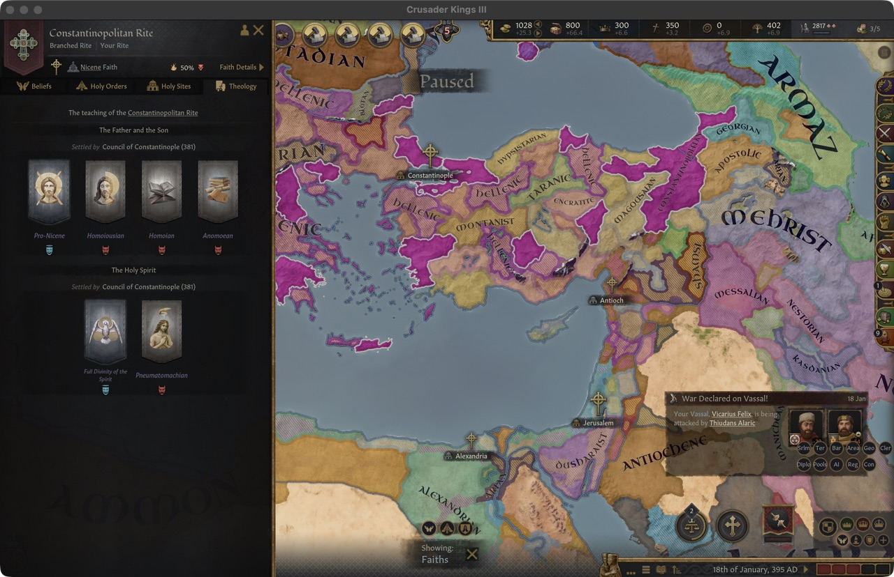
Your own position
You don't have to believe what your rite teaches. In the new Theology tab of the faith window you can Adopt Position on a question that has been raised, taking an answer as a personal tenet. It costs 150 piety and you can't adopt another position on that question for 5 years. Returning to your rite's teaching costs 50 piety, and dropping a personal tenet causes major stress, as it does in vanilla. Your position is never taken away by script: if your rite changes its answer, you keep yours, and you are now a dissenter.
Questions That Arise and Spread
So where do the questions come from? In vanilla, tenets mostly arrive ready-made in a faith's history. In Fallen Eagle, a question arises. When it does, its answers are taught to a handful of characters where the dispute began, and from there they spread from teacher to student and court to court, year by year. If no church leader has heard of any answer after a while, one rite head learns of it, so a question can't stall unseen.
Questions are shared across all of Christianity, not tied to one faith. Once an answer is known, rites can take it up. An AI rite head first considers his own answer, if his faith doesn't prohibit it and his rite hasn't rejected it; otherwise the rite makes a weighted choice leaning toward the mainline's answer, its rulers' answers and the stronger camps. The mainline rite itself is slow to commit.
We also made sure nothing moves the mainline rite on its own. The paths vanilla offers for changing it, such as a new pope's rite becoming the mainline, are closed for Fallen Eagle's Christianity. The pope is still there, as head of the Roman Rite, but he speaks for his rite, not for the whole faith. In Fallen Eagle, orthodoxy moves only through councils.
Theological Controversies
A question that is merely known is not yet a crisis. To follow each dispute as it grows, we added a situation of our own, Theological Controversies, with one track per question. Each track moves through phases:
| Phase | What it means |
|---|---|
| Not Yet Posed | No one has asked the question in earnest. |
| Emergence | The question has been raised and its first answers are taking shape, for 5 to 15 years. |
| Dissemination | Answers spread from teacher to student and court to court. |
| Controversy | The camps clash openly and bishops denounce one another. |
| Deliberation | The church demands a council. Only now can an Imperial Council take up the question. |
| Dormancy | Few still argue the question, though it can be taken up again. |
The great figures of the Christian world (rite heads, holders of sees, kings and emperors, and you) are sorted into camps, one per answer plus the Uncommitted. Your camp is your personal answer if you hold one, otherwise your rite's.
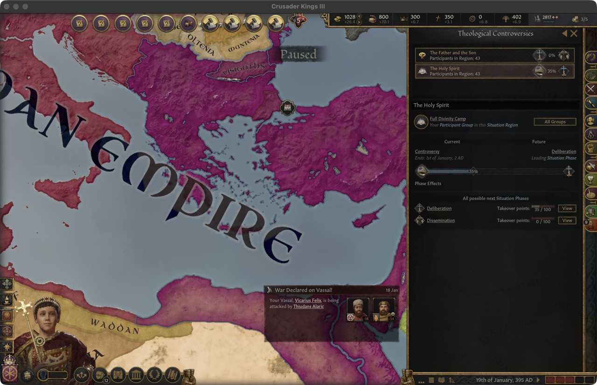
What drives a question forward is its progress. Each year it grows with how evenly the camps are matched inside each faith (a church where one answer already dominates generates little tension), with a smaller contribution from rival faiths, and it decays a little. Certain acts give it a sudden push, such as bishops of one camp being deposed or excommunicated. At 50, after at least 10 years of Dissemination, the question breaks into Controversy, and it falls back if progress stays below 30 for 5 years. At 100 it enters Deliberation. A question that almost no one argues any more fades into Dormancy.
Deliberation doesn't last forever. Its clock runs only in years when an emperor could actually call a council, so a child emperor doesn't waste the moment. After 10 such years, or 20 calendar years at most, the question returns to Dissemination unsettled.
Vanilla's Christian Church situation tracks the state of the whole Church through Chapters such as Reform or Crusade. Theological Controversies is narrower: it follows each dispute separately, and exists to answer one question - when does the church demand a council?
Imperial Councils
In vanilla, an Ecumenical Council is hosted by the pope or an archbishop. In Fallen Eagle, only one person can summon an Imperial Council: the imperial convener. He is the Senior Augustus, or failing him the earliest acclaimed Augustus, and he must follow his empire's Official Imperial Faith, be landed and adult, and be free to act.
A council can take up only a question in Deliberation. A faith holds one Imperial Council at a time, waits 2 years between councils and 10 years before returning to the same question. If you are the convener, the bishops will write to you with The Church Calls for a Council, and remind you if you delay. An AI convener doesn't wait. A council costs a player 50 gold; the AI pays nothing, so a question never stalls because the treasury is empty.
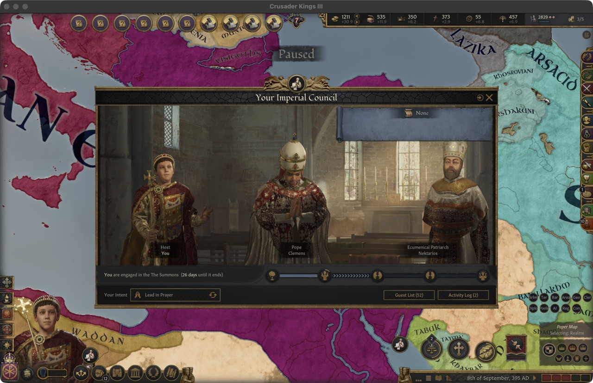
Who votes
Only the electors, the clergy of the council's faith, vote, each weighted by their highest office. Lords may attend and lean on their own clergy.
| Elector | Weight |
|---|---|
| Head of Faith | 40 |
| Holder of a see (a clerical region) | 20 |
| Head of a rite | 10 |
| Landed prelate | 4 |
| Court chaplain | 1 |
Electors who stay home still vote their answer, but those present count half again as much. The emperor casts no vote. He sponsors the council, and the answer he holds gains extra weight equal to 15% of the votes cast. An answer with a majority of the tally wins.
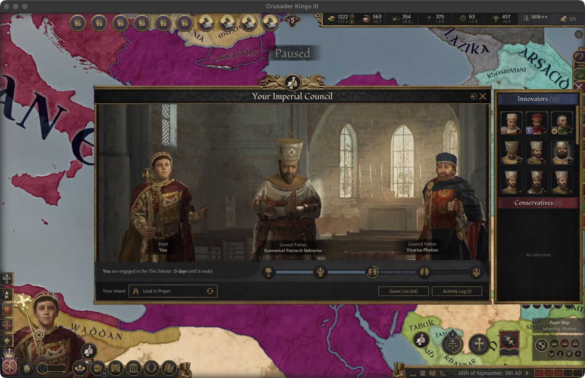
A council ends in one of three ways. Established: an answer wins and the emperor endorses it. Inconclusive: no answer reaches a majority, and every rite keeps its own. Failed: the council breaks up or is vetoed. In each case Deliberation ends and the question returns to Dissemination, keeping a fifth, three fifths or four fifths of its progress respectively.
The Emperor's Choice
The fathers decide what the answer is, and the emperor cannot replace their majority with his own. What he decides is whether their ruling binds the church:
- Endorse - the answer is established and goes out to the churches to be received.
- Veto - nothing is established. It costs 100 piety, a medium loss of legitimacy and the goodwill of every father who voted for the answer, and the failed settlement inflames the dispute.
- Let the fathers vote again - once per council, for 50 piety, you lean on the electors who vote against your answer for about a month, and then the votes are counted again. The second ruling cannot be sent back.
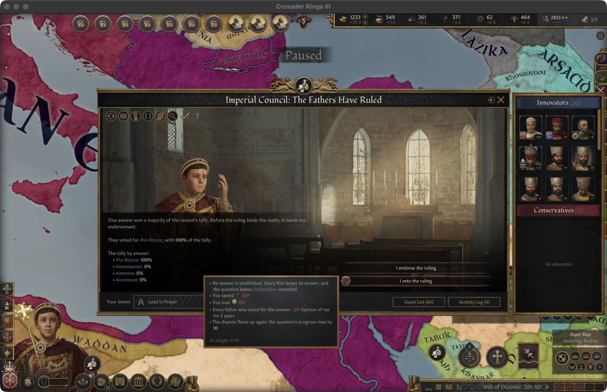
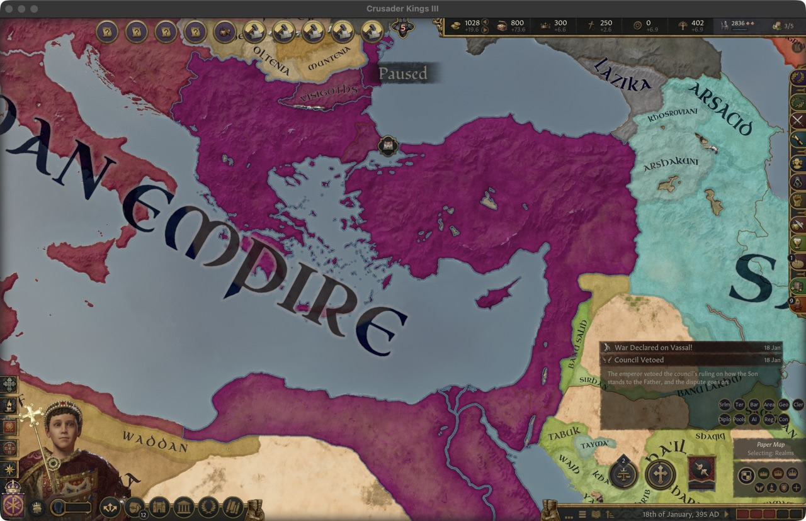
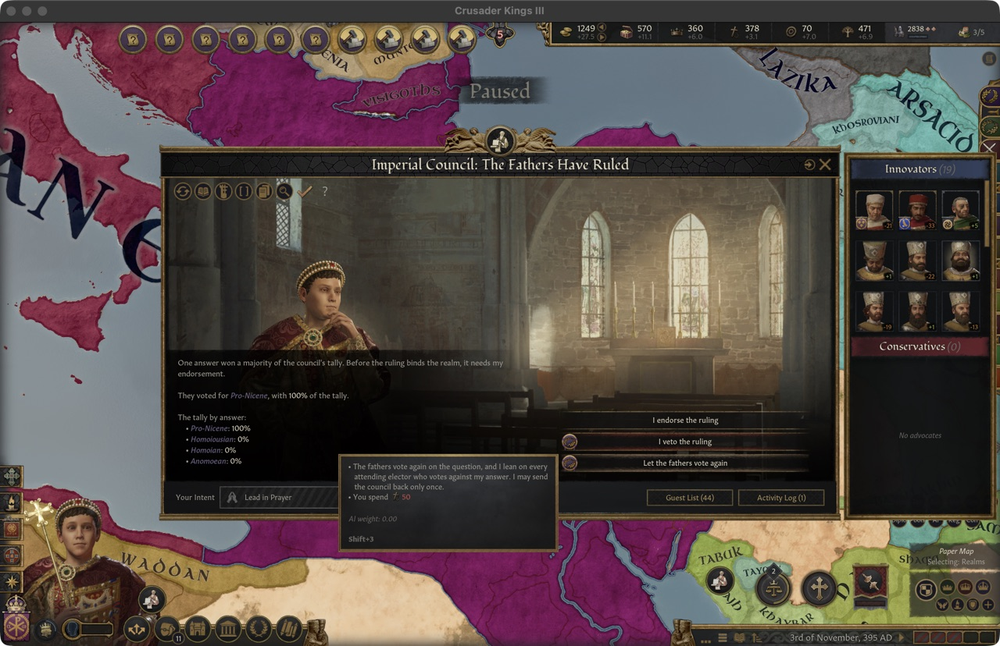
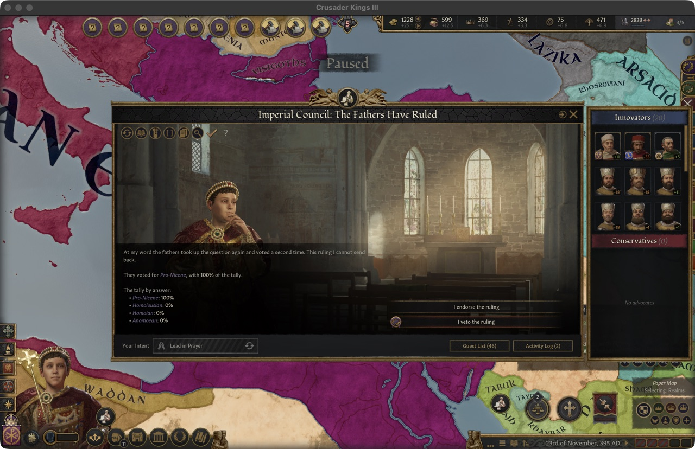
An AI emperor never sends a ruling back. He vetoes only when his own answer lost, it still won at least 33% of the fathers' votes (not counting his pull), and he can afford the piety. Otherwise he endorses, even rulings he dislikes.
Early versions did, and every game became "whatever the emperor believes is orthodoxy". The emperor chooses when and where to summon and how hard to lean, but the answer belongs to the bishops, and whether it sticks belongs to the churches.
Receiving the Ruling
This is the biggest departure from vanilla. In vanilla, a council or bull changes a tenet's status for the whole faith at once. In Fallen Eagle, a ruling has to be received: each rite decides, through its head, whether to accept the council's answer as its own teaching.
A ruling reaches every rite of the council's faith that sent at least one of its clergy, plus the mainline rite, which always receives it. Rites that sent no one are not bound. A rite that already holds the answer, whose head sponsored the council, or that has no head accepts at once. Every other head gets A Ruling to Receive:
- Accept - the answer becomes a core tenet of the rite, replacing its old answer or, if the rite is full, displacing another tenet.
- Refuse - the rite keeps its teaching, the council's sponsor takes it badly, the refusal is recorded against the rite, and the question's progress rises in proportion to the rite's share of Christian counties. A small church's refusal is a footnote; a great one's reopens the dispute.
A branch rite that hasn't answered within 2 years lets the ruling lapse; the mainline rite's silence counts as consent. The AI weighs its head's position, its clergy and rulers, its opinion of the sponsor and the size of the majority, always keeping a chance between 5% and 95%. A council can be won and still be lost in the provinces.
The mainline rite and the name of the faith
The mainline rite receives a ruling like any other, with one difference: its acceptance makes the ruling the orthodoxy of the whole faith. And when it accepts a new answer on the Father and the Son, the faith takes its name from that answer. At the 361 start the faith is Constantinian Christianity. Receive a Pro-Nicene ruling and it becomes Nicene Christianity; receive a Homoian one and it becomes Homoian Christianity. A later council can change it again.
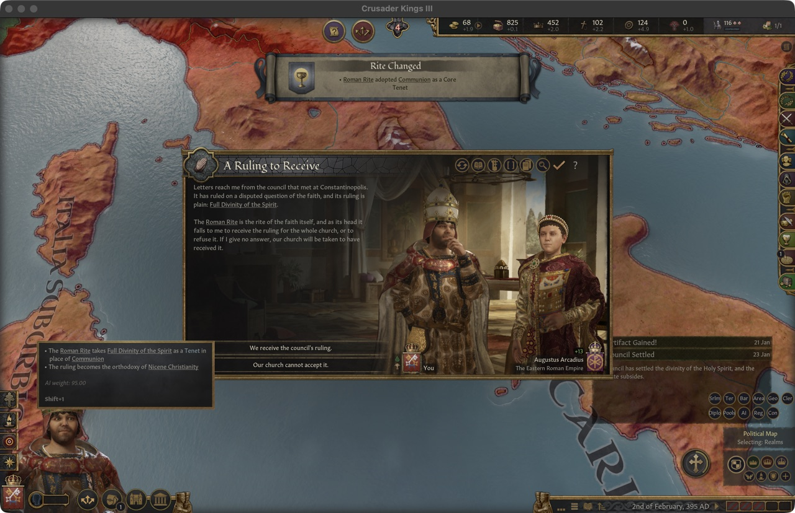
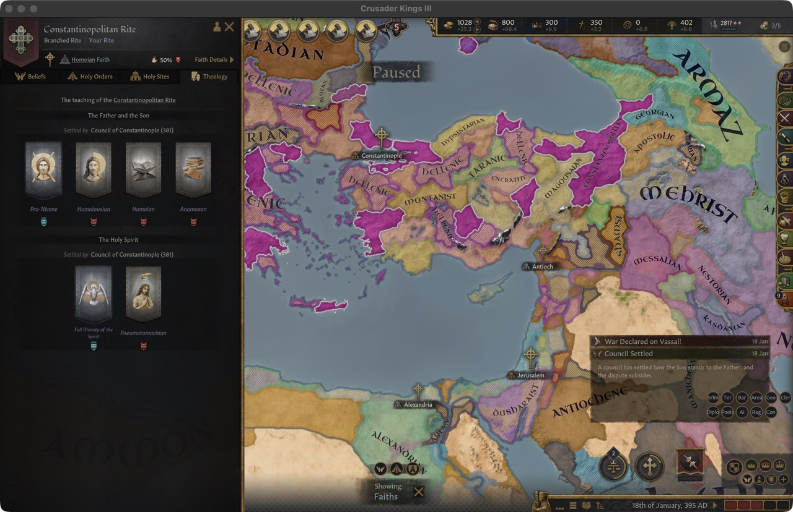
A council's authority has always depended on whether the churches accepted it. Reception also gives every rite head, player or AI, a real decision, and turns "the emperor called a council" into a story that plays out across the map for years afterwards.
When the Mainline Rite Refuses
Not yet in the game. This section is reviewed and approved but still being tested.
So what happens when a council rules one way and the mainline rite refuses? Orthodoxy follows the councils, so the mainline passes to a rite that holds the council's answer: the convener's own rite if it holds it, otherwise the holder with the most counties. The old mainline becomes a branch rite, its teachings that the new mainline lacks become Permitted, and the faith's organisation carries over unchanged. Players of that faith are told with the message A New Mainline Rite. If no rite holds the answer, nothing changes hands and the refusal simply inflames the dispute.
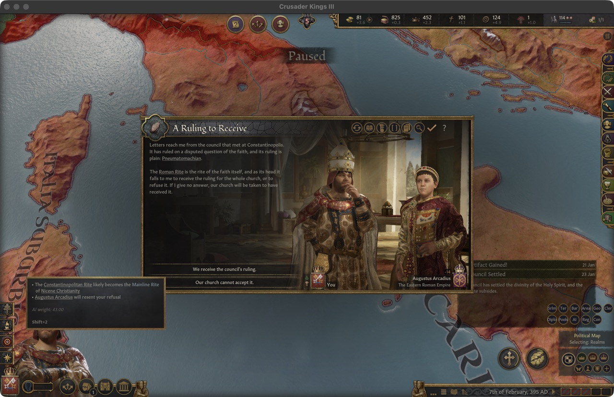
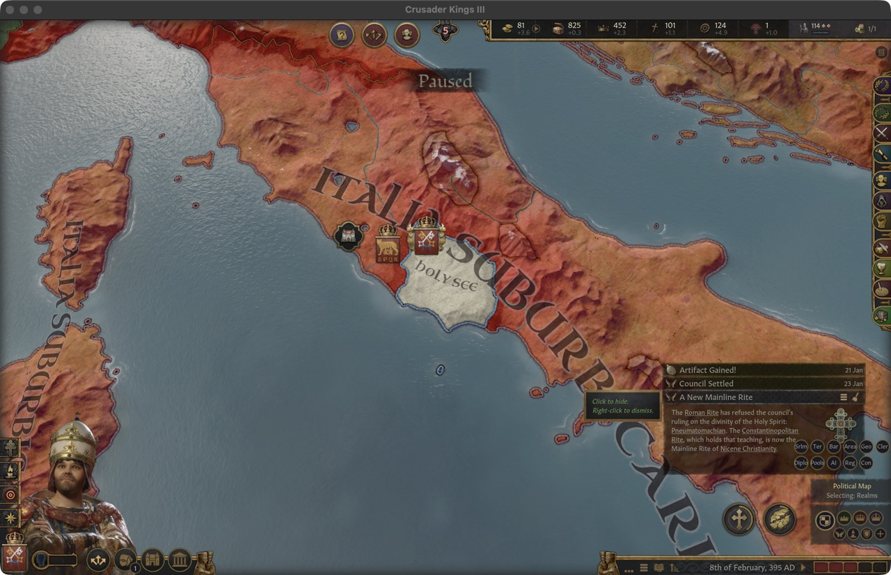
This is where vanilla's Divergence rules could bite us. Changing the mainline moves every rite's Divergence at once, and a rite created or pushed past 100 becomes a new faith. A careless switch could split half of Christendom overnight. So before a rite becomes the mainline, we estimate every rite's Divergence against it, then make the switch and check the real values, undoing it at once if any rite reaches 90. If no candidate passes, the refusal is handled as one with no successor. Breaking away from the church will come later, as a deliberate outcome rather than an accident.
Vanilla and Fallen Eagle Side by Side
| Vanilla 1.20 + By God Alone | Fallen Eagle | |
|---|---|---|
| Where teaching lives | Rites, with each tenet Core, Permitted, Known or Prohibited | The same. Theological answers are ordinary tenets, at most one per question per rite |
| Where new teaching comes from | Faith history, study, and clergy founding new rites | Questions arise in play, and their answers spread from character to character |
| How the faith's teaching changes | Ecumenical Councils, or the Head of Faith (Papal Bulls in Catholicism), set a tenet's status for the faith | An Imperial Council rules; each rite then accepts or refuses |
| Who calls councils | The pope or an archbishop | Only the imperial convener, and only on a question in Deliberation |
| The mainline rite | Follows the Head of Faith; a new pope's rite can become the mainline | No Head of Faith. The mainline changes only when it refuses a ruling (not yet in the game) |
| Divergence and heresy | Above 65 heretical; a Heresy is declared by council or bull; over 100 at creation splits at once | The same engine, guarded so that council outcomes never split a rite by accident |
| Church-wide situation | The Christian Church: seven Chapters and a Great Schism track | Theological Controversies: one track per question, with phases, camps and progress |
| The faith's name | - | Follows the mainline's answer on the Father and the Son |
History and Your Game
Nothing in this system fires because the calendar says so. A question can reach its council early, late or never, and whichever answer wins depends on who holds the purple, who sits in the hall and which churches accept the result. The later bookmarks keep their history as a starting point: 395 starts after the settlement of 381, as Nicene Christianity, and 476 after Chalcedon, as Chalcedonianism. Where your game goes from there is up to you.
In a game started before 451, the Chalcedonian split won't happen until there is a question about the nature of Christ for it to grow out of. We would rather leave it out than fire it by date.
What's Next
Next we are running long unattended test games to see how often councils sit, how they end, and how often the mainline changes hands, so many numbers above will change. After that come outcomes for each rite after Deliberation, deliberate schism and reunion, regional synods, an emperor's lasting stance on doctrine and, with historians, the real questions this system was built to carry.
That's the whole system, from a single tenet to a council that may or may not be received. As always, we'd love to hear what you think, especially about how the machinery feels, since the questions themselves are still to come. Until next time: sedeat concilium, et Deus iudicet - let the council sit, and God judge.
— The Fallen Eagle Team